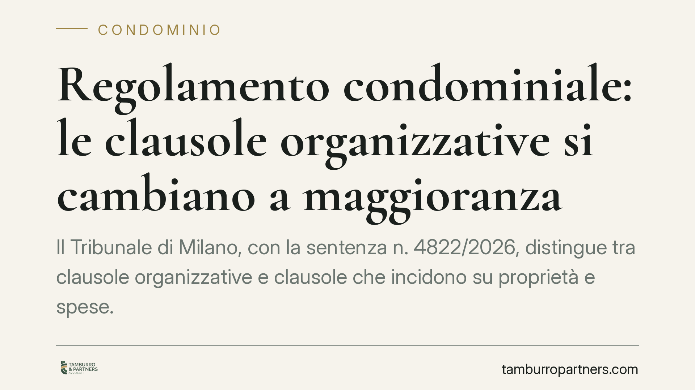

Regolamento condominiale: le clausole organizzative si cambiano a maggioranza
Il Tribunale di Milano, con la sentenza n. 4822/2026, distingue tra clausole organizzative e clausole che incidono su proprietà e spese. Le prime, come l'assemblea telematica o i limiti alle deleghe, possono essere modificate a maggioranza, anche quando il regolamento è contrattuale. L'unanimità resta necessaria solo per intaccare diritti reali o criteri di riparto.

Il caso
Un gruppo di condomini dissenzienti aveva impugnato una delibera che modificava alcune regole del regolamento: in particolare l'introduzione delle assemblee in modalità telematica e un limite al numero di deleghe esercitabili da un singolo partecipante. La tesi degli impugnanti era netta: trattandosi di regolamento di natura contrattuale, ogni modifica avrebbe richiesto il consenso unanime.
Il Tribunale di Milano, Sez. XIII Civile, ha respinto l'impugnazione. Il punto decisivo non è l'origine del regolamento, ma la natura della singola clausola che si intende modificare.
Inquadramento normativo
La distinzione si fonda sull'art. 1138 del Codice civile, che disciplina il regolamento condominiale e il suo contenuto tipico: uso delle cose comuni, ripartizione delle spese, decoro dell'edificio, amministrazione. Le norme regolamentari di tipo organizzativo e gestionale rientrano nella competenza assembleare e seguono la regola della maggioranza.
Altra cosa sono le clausole cosiddette contrattuali in senso proprio: quelle che limitano i diritti dei condomini sulle parti di loro esclusiva proprietà, oppure che derogano ai criteri legali di riparto delle spese (artt. 1118, 1123 c.c.). Queste incidono su diritti reali o su posizioni patrimoniali individuali e, per consolidato orientamento, possono essere introdotte o modificate solo con il consenso di tutti.
Il Tribunale ribadisce quindi che la qualifica "contrattuale" del regolamento non congela l'intero documento. Occorre guardare alla sostanza di ogni previsione: se regola il funzionamento dell'organizzazione condominiale, la maggioranza basta; se tocca la proprietà o il riparto, serve l'unanimità.
Perché la decisione conta
Molti regolamenti in vigore sono stati redatti decenni fa, quando l'assemblea telematica non esisteva e la gestione era pensata su modelli oggi superati. Interpretare ogni modifica come soggetta a unanimità significava, in pratica, rendere il regolamento immodificabile: in condomini numerosi raggiungere il consenso totale è spesso impossibile.
La pronuncia restituisce margine di manovra all'assemblea. Le regole sul *come* ci si organizza — modalità di convocazione, svolgimento delle riunioni, gestione delle deleghe — tornano nella disponibilità della maggioranza. Restano invece saldamente protette le posizioni individuali: nessuno può vedersi modificata la destinazione d'uso della propria unità o la quota di spesa senza il proprio consenso.
Implicazioni pratiche
Per l'amministratore, la sentenza offre un criterio operativo: prima di portare in assemblea una modifica regolamentare, occorre qualificare la clausola. Modifica organizzativa? Si procede con il quorum ordinario. Modifica incidente su proprietà o riparto? Serve l'unanimità, pena l'annullabilità o la nullità della delibera.
Per i condomini, cambia la prospettiva difensiva. Impugnare una modifica organizzativa invocando la mancanza di unanimità ha ora minori probabilità di successo. Chi vuole opporsi dovrà dimostrare che la clausola incide davvero su un diritto reale o su un criterio di spesa, e non semplicemente sulle regole di funzionamento.
Attenzione, però: la linea di confine tra clausola organizzativa e clausola sui diritti non è sempre nitida. Un limite alle deleghe è pacificamente organizzativo; una previsione che vincola l'uso di spazi comuni può invece sconfinare nel terreno dei diritti. La qualificazione va fatta caso per caso.
Cosa fare in concreto
- Rileggete il regolamento distinguendo le clausole organizzative da quelle che toccano proprietà esclusive o riparto spese: è questa classificazione a determinare il quorum.
- Verbalizzate con precisione la natura della modifica proposta e il quorum applicato, così da rendere la delibera difendibile in caso di impugnazione.
- Non assumete che la natura contrattuale del regolamento imponga sempre l'unanimità: valutate la singola previsione, non l'intero documento.
- Richiedete un parere preventivo nei casi dubbi, in particolare quando la clausola produce effetti indiretti su parti comuni o sull'uso delle unità.
- Condomini dissenzienti: prima di impugnare, accertate che la modifica incida davvero su un diritto tutelato dall'unanimità, non solo sull'organizzazione.
---
*Contributo informativo a cura di Tamburro & Partners - Avv. Giuseppe Tamburro. Non costituisce parere legale.*
Ogni condominio ha una storia a sé.
Se gestisci un'amministrazione e vuoi un confronto su una specifica questione condominiale, scrivi allo studio. Ti rispondiamo entro un giorno lavorativo.